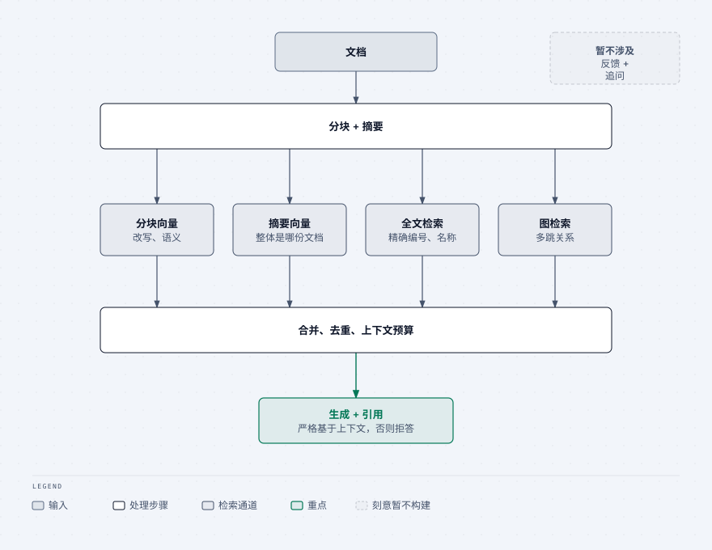
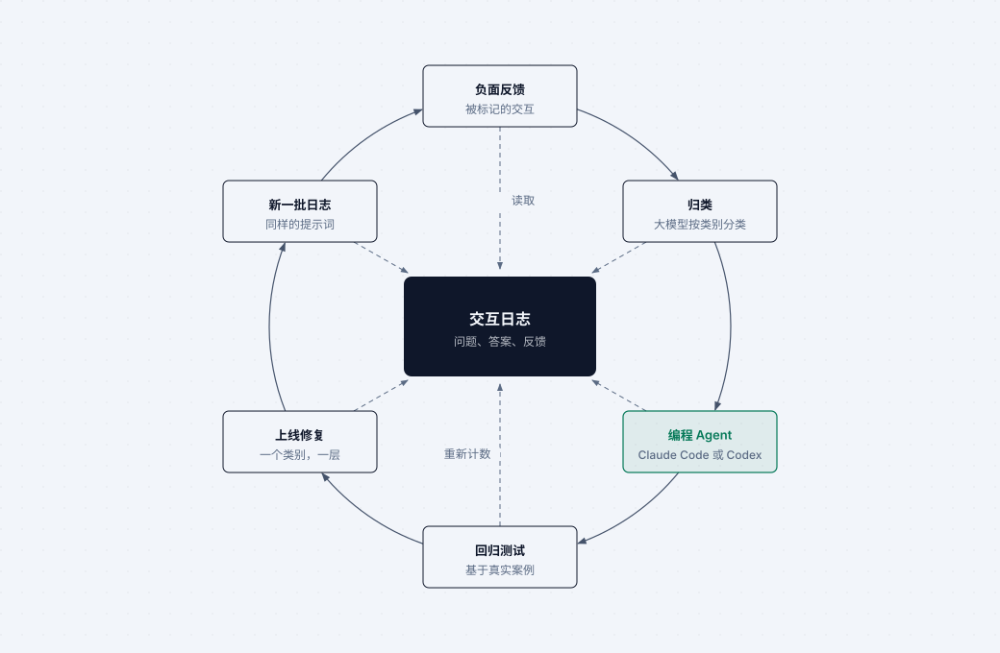
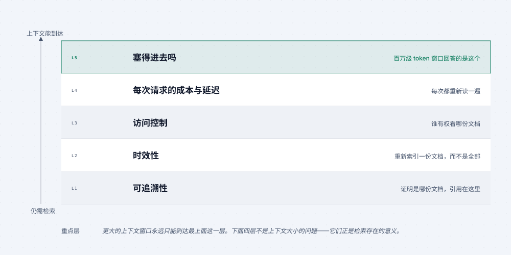
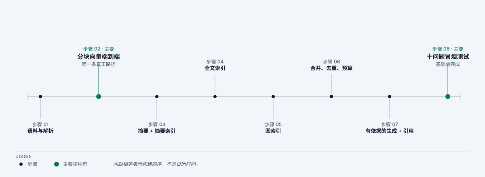

RAG Formation Continue · 01 · 生产改进闭环
让每一次 RAG 交互带来更好的下一版。
先完成埋点，再聆听用户，然后把真实证据交给 Claude Code 或 Codex，而不是泛泛地要求“改进 RAG”。
教学目标
交互 → 日志 → 用户反馈 → Agent 分析 → 改进计划 → 范围明确的修复 → 新证据。产出是可辩护的计划，而不是一组猜测。
1 · 在调优之前记录每次交互
保存稳定的交互 ID、用户与入口、原始问题、请求参数、每个通道的检索结果、最终上下文、回答、引用、延迟、成本和错误。
没有追踪记录的糟糕回答只是轶事；有了追踪记录，它才是工程案例。

2 · 将反馈写回同一条记录
在每个回答下加入点赞、点踩和可选评论。将评分、评论和时间写回相同的交互 ID。反馈说明哪些故障对用户重要；日志说明系统当时实际做了什么。

3 · 将真实日志交给 Claude Code 或 Codex
抽取 20 至 30
条负面反馈记录并脱敏。提供问题、各通道结果、上下文、回答、引用、延迟和评论。要求
Agent 将故障归为
retrieval_miss、ranking_miss、unfaithful_answer、over_refusal、under_refusal
或 followup_lost。
分析这些负面反馈交互。
为每条记录给出一个故障类别，并指出日志中的证据。
归纳重复模式；暂时不要提出修复方案。
4 · 要求计划，再限定修复范围
将已归类的批次重新交给 Claude Code 或 Codex。要求提供按优先级排序的计划：证据、责任层、改动、风险、验收标准、回归测试和新日志验证。先处理影响最大且范围最小的修复。
5 · 按可观测的顺序改进

- 先确保日志与反馈可靠。
- 在责任层修复一类已测量的故障。
- 加入来自真实交互的回归案例。
- 发布范围明确的改动。
- 对新日志重复相同的分析并比较数量。
交付物
一个与生产证据相连的优先级 RAG 改进待办清单：每项修复都有回归案例和发布后的再分析步骤。